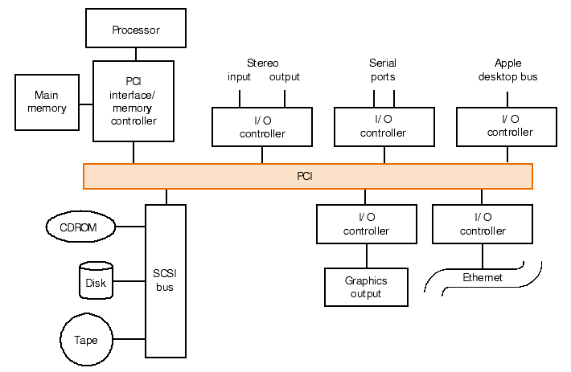

public: True class: center, middle # 输入/输出 蒋炎岩 <jyy@nju.edu.cn> 南京大学计算机软件研究所 --- # 概述 📢 .red[HW3 (11.15), Lab3 (12.2), PA3 (11.18, 11.25, 12.9)]来啦！ 以及之后几次课可能要🐦了 (丢给助教) -- count: false ---- 没有I/O设备，计算机就不能和人“友好”地交流：显示图形、播放声音、接收按键…… * I/O设备概述 * 图形加速器 * NEMU设备 --- class: center, middle # I/O设备概述 --- # 访问I/O设备 只有TRM的机器对外输出的唯一手段是`putc()` 那我们接到计算机上的键盘、鼠标、显示器……都是如何驱动的？ * .red[计算机硬件一定提供某些指令访问这些设备] ---- Memory-mapped I/O (MMIO) * 直观，使用普通内存读写指令就能访问 * 带来一些设计和实现的麻烦：编译器优化、乱序执行…… Port-mapped I/O (PMIO) * 有另一个类似于内存的地址空间(ports)，老旧的计算机系统没有缓存/内存控制器，I/O总线直接连接CPU --- # 简单的例子 * .float-right[<img src="../static/wiki/ics/2018/slides/img/i8042.png" width=300px/>] Intel 8042 控制器 (PS/2 键盘/鼠标) * 控制/数据端口：0x64/0x60 * 在有事件后`inb(0x60)`读出按键的扫描码(scan code) * Intel 8259 中断控制器 * .float-right[<img src="../static/wiki/ics/2018/slides/img/i8259.jpg" width=150px/>]CPU只有一根中断线(`cli/sti`指令可以控制CPU的中断开关)，但有很多中断源 * 中断控制器可以管理多个中断线 (级联2片8259)、设置中断触发模式、屏蔽等 --- # 简单的例子 (VGA) .float-right[<img src="../static/wiki/ics/2018/slides/img/hello-os.png" width=240px/>] VGA有多个模式，结合了MMIO和PMIO * MMIO：多种字符/图形模式 * PMIO：各类配置(光标位置、闪烁……) ---- 简化版(nemu)：MMIO，像素就是一个.red[数组]：`uint32_t *pixels;` * `W * H`个像素，行优先方式存储 * `pixels[y * W + x] = color;`实现绘制 --- # DMA控制器 > I/O设备的读写速度是非常.red[慢]的(经常需要到低速总线去绕一圈)，传送大量数据(传送磁盘/网络数据)和CPU同步效率极低 I/O设备不仅是和物理设备通信：.red[DMA] (Direct Memory Access)设备：硬件实现的`memcpy` (内存-内存；内存-I/O设备) .center[<img src="../static/wiki/ics/2018/slides/img/i8237.png" width=600px/>] --- # 现代x86: APIC & PCI .center[<img src="../static/wiki/ics/2018/slides/img/iomap-64.png" width=600px/>] --- # 例子：LAPIC 完全用C代码管理设备 (TFM: ID = 8, TPR = 32, EOI = 44), so easy! ```c volatile unsigned int *lapic; static void lapicw(int index, int value) { lapic[index] = value; lapic[ID]; // wait for write to finish, by reading } // 读设备：获得当前CPU编号 int _cpu(void) { return lapic[ID] >> 24; } // 写设备：开启APIC中断 void lapic_eni() { lapicw(TPR, 0); } // 写设备：End-of-interrupt，后续响应中断 void lapic_eoi() { lapicw(EOI, 0); } ``` PCI也类似(此处省略数千页FM)，硬件Vendor真是不容易…… --- class: center, middle # 更复杂的例子：图形加速器 --- # NES PPU NES系统的CPU是6502 @ 1.79Mhz，IPC = 0.43 * 在60FPS下，每一帧必须在13K条指令内完成 * 屏幕共有256 x 240 = 61K像素 (256色) * 如何做到非常顺滑，没有卡顿的游戏？ ---- 使用“图形加速硬件”，就是大家知道的显卡 * PPU (Picture Processing Unit) --- # PPU：数据结构/状态机 PPU可以看成是一个数据结构(想象成一个`struct`) * .float-right[<img src="../static/wiki/ics/2018/slides/img/nes-sprite.png" width=200px/>]一组8 x 8的patterns (tiles)，每个像素用2bits描述 (背景/透明，颜色2，颜色3，颜色4) * 8个调色板 * 描述前景/背景用的数据表 ---- 图形加速卡也是一个特殊的.red[处理器] * 接受数据结构的更新指令 * 将数据结构的内容绘制到屏幕上 --- # Patterns and Palettes (ROM) .center[] --- # 前景和背景 (RAM) 描述一个8x8的方格的绘制方法需要需要两个字节：#tile pattern, attributes： ``` 76543210 |||||||| ||||||++- Palette (仅使用sprite调色板4-7) of sprite |||+++--- Unimplemented ||+------ Priority (0: in front of bg; 1: behind bg) |+------- Flip sprite horizontally +-------- Flip sprite vertically ``` * 背景：一个(#, A)的二维数组(两个屏幕大小)，可以选择其中任意位置显示 * 前景：64个(x, y, #, A)。受限于PPU，每个扫描线只能显示8个sprites，这就是为什么玩游戏的时候复杂画面会“闪烁” --- # 背景滚动 背景是一个大数组，可以指定其中一部分做“卷轴”效果 .center[] * LiteNES卷轴部分有bug (看了这个图就知道bug在哪了吧)…… * 但没人维护那代码了😂 --- # 背景动画 通过切换tile pattern table实现背景动画 * 突破一行8个sprites的限制！ * 难怪为什么有些“次世代”的游戏画面那么精良 .center[<img width="640px" src="../static/wiki/ics/2018/slides/img/nes-switch.gif"/>] --- # 访问NES PPU 回顾：PPU是一个状态机/数据结构；电路逻辑负责输出到屏幕 | 地址空间 | 大小 | 功能 | | ------------- | --------- | ------------------------------------------------------------ | | $0000-$1FFF | 2 x $1000 | [Pattern tables](https://wiki.nesdev.com/w/index.php/PPU_pattern_tables) | | $2000-$2FFF | 4 x $0400 | [Nametable](https://wiki.nesdev.com/w/index.php/PPU_nametables)s | | $3000-$3EFF | $0F00 | Mirrors of $2000-$2EFF | | $3F00-$3F1F | $0020 | [Palette RAM](https://wiki.nesdev.com/w/index.php/PPU_palettes) indexes | | $3F20-$3FFF | $00E0 | Mirrors of $3F00-$3F1F | | $S0000-$S000C | $40 | Sprite Y, #, attribute, X | CPU通过内存映射的寄存器$2003 (OAMADDR), $2004 (OAMDATA), $4014 (OAMDMA) $2006, $2007 (PPUMEM)更改PPU的数据结构 * 与port I/O类似，只是memory mapped port --- # 现代图形加速卡 > 如果你希望设计一套标准，支持2D/3D图形应用/游戏，并能在各种GPU上高效实现，该怎么办？ -- count: false ---- 答案是类似的：维护一个**数据结构**，并定义数据结构**显示**的方式 OpenGL：Gemoetry + Shader .center[<img src="../static/wiki/ics/2018/slides/img/opengl-pipeline.png" width=400px/>] --- # 状态机视角下的GPU 之前提到，ICS这门课最重要的take-away message就是“计算机是个状态机” - CPU寄存器/内存的.red[值]决定了它的状态 - 在时钟驱动下，CPU根据自己的状态取出指令执行，改变状态 - GPU也类似于CPU，有自己的存储(显存)，执行指令 ---- 所以GPU当然也能用来做.red[计算]了！ * 早在NES时代，GPU的运算.red[速度]就远远超过CPU (每秒绘制60次256x240的屏幕)，但不够.red[通用] (只能进行图形计算) * 之后出现了用Shader编程的思路(GPGPU)，再演化到今天的CUDA, OpenCL、神经网络处理器的崛起 --- # 设备驱动程序 每个硬件生产厂商都有自己的硬件实现(参考NES PPU)，但如果让操作系统/窗口管理器等应用直接操作设备，代码就变得不可移植了 * 程序通常使用一套标准API (OpenGL, Vulkan, Metal) * 设备驱动程序负责将API翻译成设备能理解的指令 ---- 一般的设备(磁盘、串口、...) * `read()`, `write()`, `open()`, `close()`, `ioctl()`就足够了 --- class: center, middle # NEMU设备 --- # 实际系统中的I/O设备 There is no magic. `in`/`out`和涉及内存的指令都可能访问设备 (内存控制器解析地址并转发到合适的目的地) .center[] --- # 模拟I/O设备 - 让每个I/O设备注册到地址空间中连续的一部分 - 内存映射I/O的读自/写入设备自身的存储器(`mmio_space`) ```c typedef struct { paddr_t low, high; uint8_t *mmio_space; mmio_callback_t callback; } MMIO_t; ``` - 端口I/O只需提供端口号 ```c typedef struct { ioaddr_t low, high; pio_callback_t callback; } PIO_t; ``` --- # 模拟总线 这也太土了吧喂！ ```c /* bus interface */ int is_mmio(paddr_t addr) { int i; for (i = 0; i < nr_map; i ++) { if (addr >= maps[i].low && addr <= maps[i].high) { return i; } } return -1; } ``` 然后转发给`mmio_read`和`mmio_write`就行了 * NEMU是个.red[模拟器]，这些设备的读/写行为应当被模拟 * 通过调用callback实现：`map->callback(addr, len, is_write);` --- # 实现模拟的I/O设备 操作系统已经为我们做了封装 * `/dev/`下的各类设备、SDL库…… * NEMU代码实际上完成的是把虚拟设备的I/O翻译成图形库、操作系统等API的调用 ---- 以图形为例 * nemu的屏幕像素是内存中一个400 * 300的texture * 这个texture被render到整个窗口 * 每当update_screen发生(每秒50次)时，texture被重新绘制(底层实现，翻译成OpenGL，以及显卡能理解的语言)